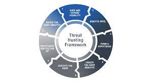

Network Intrusion detection system – Scans your network traffic to detect and alert suspicious activites
that are occurring within your network.

Network Intrusion prevention system-NIPS are used to scan your network traffic to alert and
respond when suspicious activity and block that is detected within your network. This can make all difference from stopping you from being the next big attack within your industry.

System incident Event manger- used with sensors being integrated
within this product. A SIEM will sort and match event correlation based on the sensor logs that
are sent to the SIEM.

Endpoint Detection Response- Monitor endpoint devices and send an alert
when it detects suspicious activity. This will help you
isolate endpoints to stop the spread of attack.

Threat hunting-Our team will make find targets are most likely to attack your company and create
solution's to prevent or transfer risk from your company.
Penetration Testing: Our Penetration team will work with your company to find weaknesses within
your network infrastructure as well as within your employees. Strengthening your employees will
help prevent future attacks as well as your infrastructure.

Simulating Advanced Persistent Threat actors (APT)-Our Penetration testing team can simulate certain
APT groups that your company may be a victim to. This will help find weaknesses that they may use and
for your company to strengthen these areas.